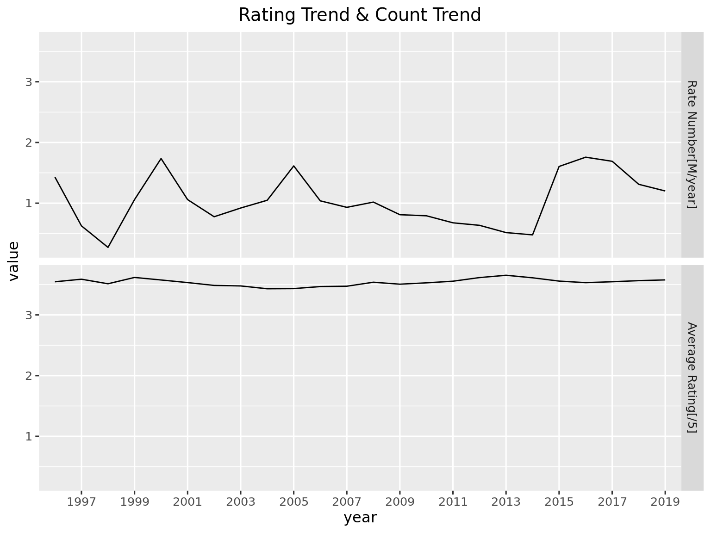
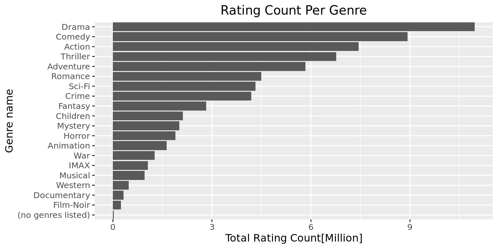
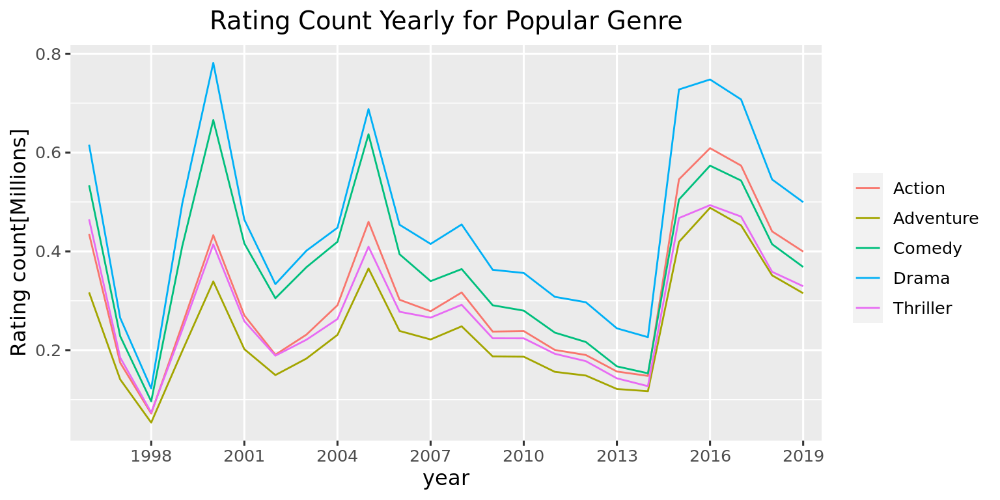
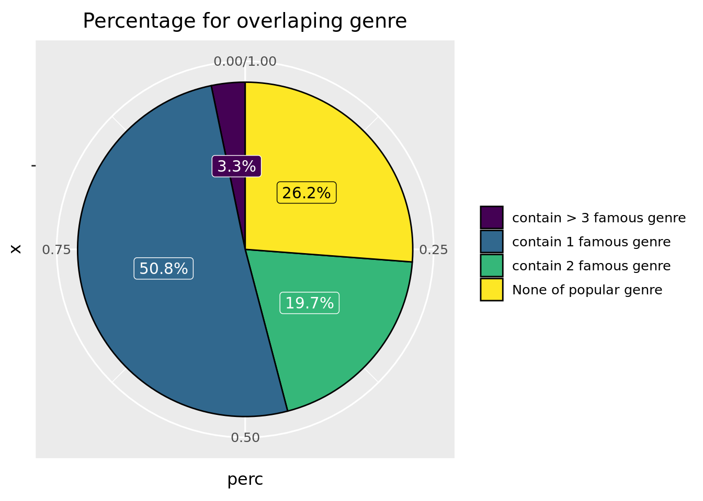
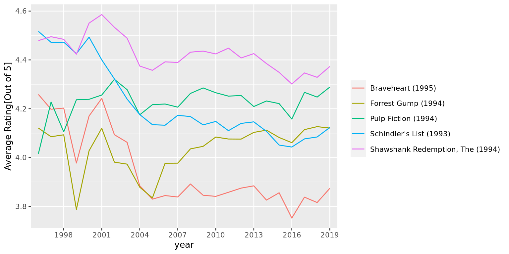

SHORT TITLE HERE
1
Introduction
2
Data sources
3
Data transformation
4
Missing values
5
Results
5.1
Overall Trend
5.2
Genre Exploration
5.3
Popular Genre Year Analysis
5.4
Overlap for popular genres
5.5
Popular Movie in Most popular genres
5.6
Popular Movies
5.7
Movie Trend for genre
6
Interactive component
7
Conclusion
Published with bookdown
YOUR TITLE HERE
Chapter 5
Results
5.1
Overall Trend
//To-do: Modified Label

5.2
Genre Exploration
//To-do: Modified Label
5.3
Popular Genre Year Analysis

5.4
Overlap for popular genres

5.5
Popular Movie in Most popular genres

5.6
Popular Movies
5.7
Movie Trend for genre
